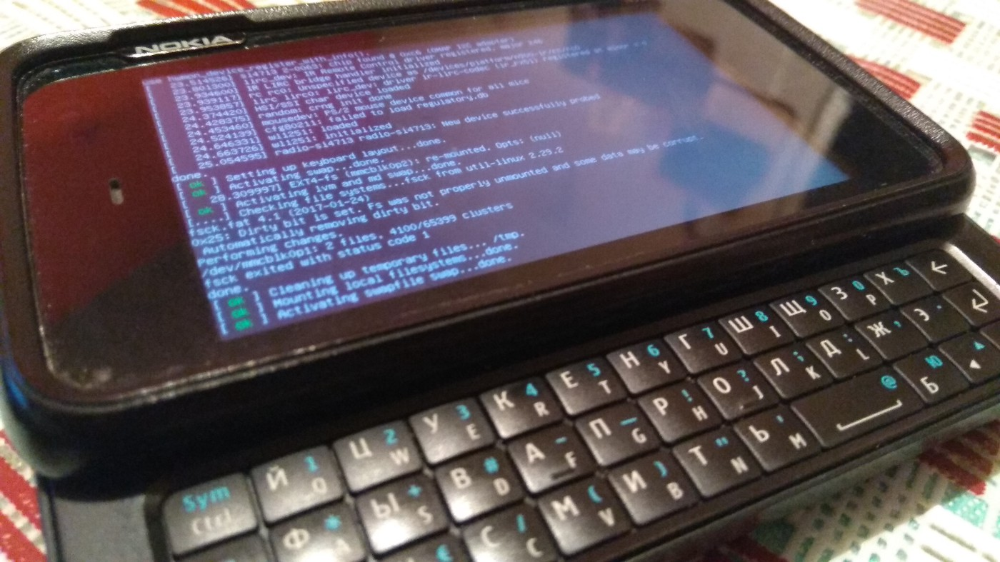

Перепрошивка Nokia N900 - 06.10.2019

Предупреждение: автор не несет ответственности за причиненные повреждения вашему аппарату в процессе следования данным инструкциям. Вы все делаете на свой страх и риск.
Не так давно мне в руки попал знаменитый Nokia n900, я с ним всячески разбирался. Да так разбирался, что слетело ядро, и девайс впал в bootloop.
Раз сломал, нужно чинить. Были найдены нужные файлы, и мануал по прошивке данного телефона.
Если вкратце, то для прошивки n900, нужно 3 вещи:
- Образ FIASCO aka COMBINED — в него входит rootfs, kernel, и прошивка GSM модуля (если верить вики).
- Образ eMMC aka VANILLA — нужен для очистки пользовательского раздела /home
(прошивку данного образа мы рассматривать не будем, так как мне это было просто не нужно. Но он прошивается почти так же как и первый).
- Флешер, он же flasher-3.5 — софт с помощью которого и будем прошивать.
Образы берем от сюда, а флешер можно найти тут. Я флешер ставил из AUR, так как от туда еще и подтянулась нужная библиотека:
yaourt flasher
Приступим к прошивке:
Переходим в директорию с образом прошивки, и выполняем команду (имя образа у вас может быть другим):
sudo flasher-3.5 -F RX-51_2009SE_20.2010.36-2.003_PR_COMBINED_003_ARM.bin -f -R
Должно появится что-то на подобии:
...
Suitable USB device not found, waiting
Выключаем N900, зажимаем клавишу “u” на клавиатуре девайса, и только потом подключаем USB шнур.
Если вы все правильно сделали, то на экране телефона появится значок USB, а на компьютере в терминале побегут строки с информацией о перепрошивке.
После этих действий телефон должен перезагрузиться, и начать работать с новой прошивкой.
Но не тут то было, у меня после выполнения этих действий, в терминале выбило ошибку (не все могут с ней столкнуться, у некоторых все отлично шьется):
Error claiming USB interface: Device or resource busy
Решается она удалением модуля ядра:
sudo modprobe -r cdc_phonet
Вы так же можете столкнуться с другими ошибками, с их решением можно ознакомиться тут.